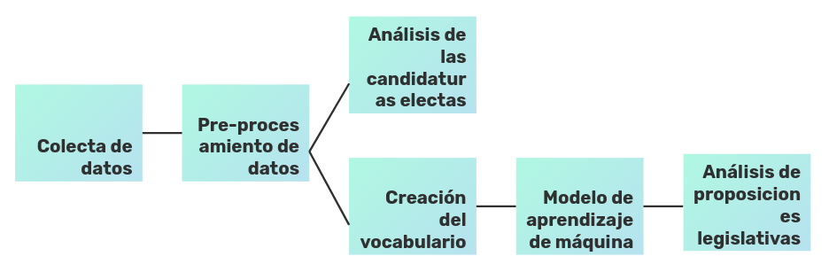
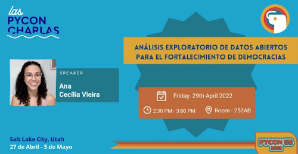

Análisis exploratorio de datos abiertos para el fortalecimiento de democracias
En este artículo encontrás el contenido técnico de tecnología (notebook) y las diapositivas de la charla “Análisis exploratorio de datos abiertos para el fortalecimiento de democracias” presentada en la PyCon US 2022 (PyCon Charlas).
Para empezar, todo el análisis de datos hay que tener un contexto. Lo nuestro es la existencia, en Brasil, de una ley que permite a las mujeres votaren y seren votadas, además las legislaciones de cuota de género (Ley 9.504/1997 y 12.034/2009) y el tema de las propuestas legislativas.
Los temas de las proposiciones son interesante porque la Organización de los Estados America (OEA) prevé que a partir de 30% de mujeres en las casas legislativas se nota aumento sustancial en proposiciones legislativas en favor de la democracia y protección de derechos de grupos históricamente marginados, ejemplo: campesinos, mujeres, población LGTQIA+, negros, ancianos, discapacitados, artistas, poblaciones económicamente vulnerables y pueblos indígenas.
Si tienes interés en el tema de datos abiertos y nivel de transparencia de datos en América Latina, invitote a leer el artículo con el contenido teórico de la charla.
Pipeline

El pipeline de este análisis es compuesto por colecta, pre-procesamiento y análisis de datos. Todavía, antes del análisis de las proposiciones hizo falta estandarizar sus palabras claves, por lo tanto fue desarrolado un classificador (modelo de aprendizaje de máquina).
Los datos fueron colectados del Portal de Datos Abiertos de la Cámara de Diputados de Brasil y corresponden a las candidaturas electas en el periodo de 1934 y 2021. El objetivo del análisis es compreender la evolución de la cantidad de mujeres elegidas como diputadas federal, el impacto de las legislaciones de cuotas de género y si ya se nota cambio en las temáticas de las propuestas legislativas.
Colecta de datos
Fue usada la API RestFul en Python para recolectar los datos, excepto los de las proposiciones legislativas que no estaban disponible por API, en este caso los datos fueron descargados manualmente año a año.
Es importante decir que en el Portal de Datos Abiertos de la Cámara de Diputados de Brasil no están disponibles todas las proposiciones legislativas hasta el año 2000. Entonces, puede que los resultados del análisis no refleje la realidad, todavía creo que es un buen ejercicio para tener ideas de cómo podemos manejar datos abiertos y actuar desde la sociedad civil.
Pre procesamiento
Las seguintes etapas del pipeline puedes encontrar en este notebook.
Consideraciones finales
Desde la sociedad civil, hay un montón de iniciativas que trabajan y luchan por mejoras en nuestra sociedad. Únete a una de ellas!! Nadie cambia el mundo sola, todavía puedes aportar tu granito de arena.
Organizaciones que promueven uso de la tecnología para el fortalecimiento de democracias
- Aúna
- Cívica Digital
- Codeando México
- Ciudadanía inteligente
- Data Cívica
- ILDA
- Instituto Cidade Democrática
- Instituto de Tecnologia e Sociedade
- Latinno
- Open Knowledge Brasil

Este texto son los apuntes de la charla “Análisis exploratorio de datos abiertos para el fortalecimiento de democracias” presentada en la PyCon US 2022 (PyCon Charlas) en el 29 abr 2022 en la ciudad de Salt Lake City(EUA).
Recursos:
También puedes leer este texto en: 🇧🇷
-----